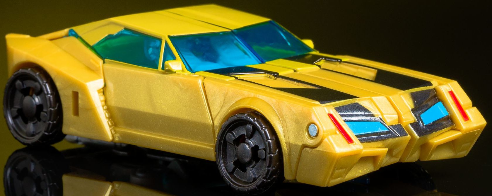
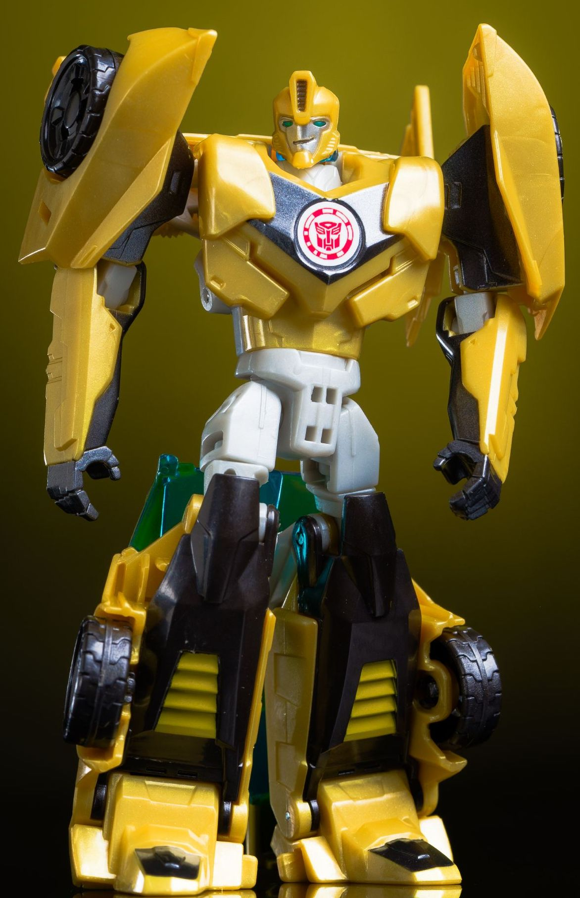
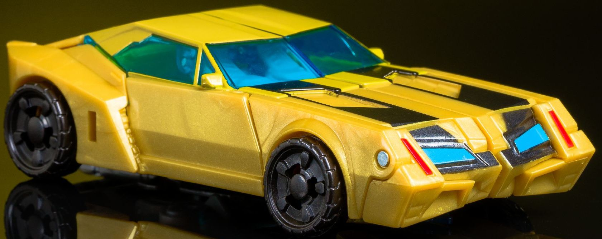
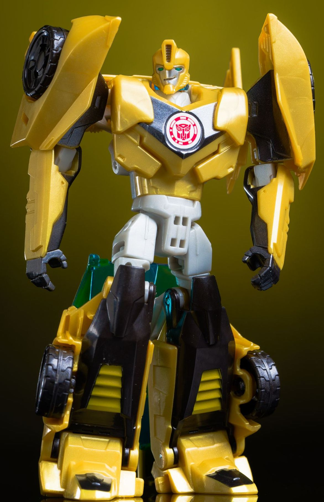
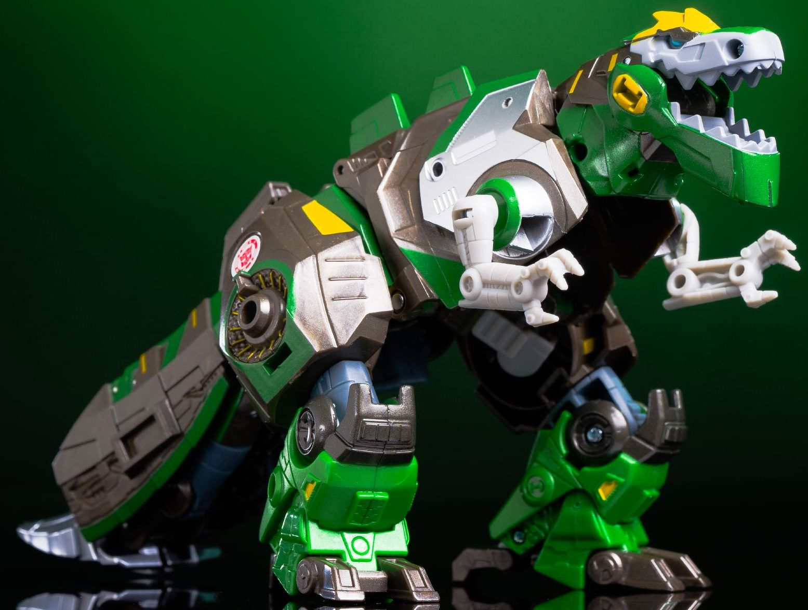
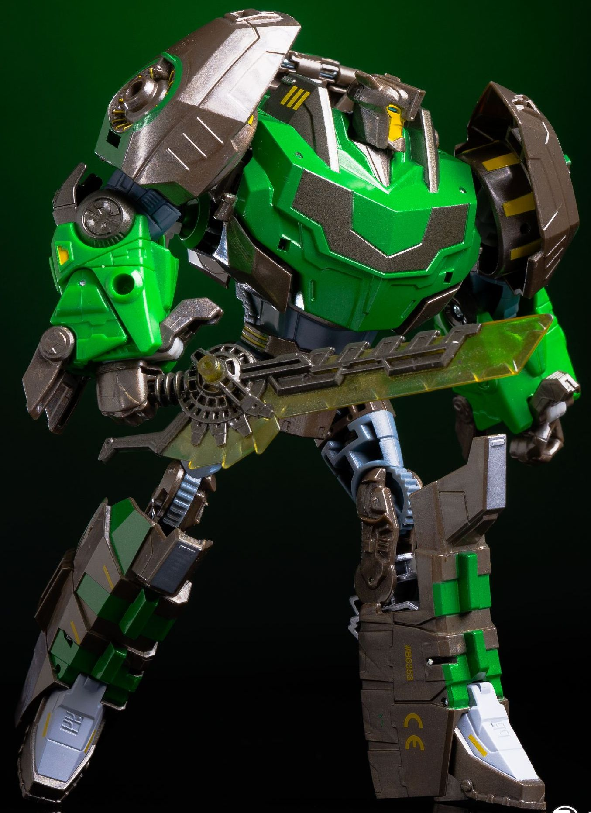

 
Size: Warrior
Difficulty of Transformation :
Color Scheme : Semi-metallic milky gold, black, bright orange-red, transparent blue, light milky gray, and some silver, and moderately light blue
Individual Rating : 8.4
Allegiances
: Autobot
Set Price
: $60 (U.S.)
(NOTE: Because this set is composed of repaints,
this is not a full-blown review. This mainly covers any changes made to
the set and the color scheme, and merely compares it to the original versions
of these molds. For a review on the original version of RID2015 warrior
Bumblebee-- go
here
. For a review of Generations
FoC Grimlock-- the mold used as the base for this version of Grimlock--
go
here
.)
 Bumblebee
Bumblebee


Size:
Warrior
Difficulty of Transformation
:
Color Scheme
: Semi-metallic milky
gold, black, bright orange-red, transparent blue, light milky gray, and
some silver, and moderately light blue
Individual Rating
: 8.4
Bumblebee isn't much
of a redeco-- he's more of a "pretty variant" of the original deco this
mold had, and is definitely a distant second in this set compared to the
draw of Grimlock... but we'll get to ol' Grimmy in a bit. First off, the
main difference between Platinum 'Bee and the mass retail version is that
this one has milky, semi-metallic gold plastic (i.e., it has some glitter
in it). It looks pretty nice, but not as nice as say, actual gold paint
all over the figure would have been. In addition to the otherwise same
paint apps and plastic color layout that the original Warrior had, this
version has some additional orangish-red paint on the side of his headlights.
There's also some silver paint on the hilt of his sword, which is really
paint-wise a nice addition and makes it the weapon look a lot more like
a "Decepticon Hunter" sword from the show. The middle vent on his head
is now silver instead of black, and the tops of his feet are also painted
black. That's it, though; otherwise he's the same as the initial version.
No mold changes have
been made to Platinum Edition Bumblebee.
 Grimlock
Grimlock


Size
: Voyager
Difficulty of Transformation:
Medium
Color Scheme
: Semi-metallic charcoal
black, forest green, transparent greenish yellow, and some dull periwinkle,
silver, very light gray, light blue, light bluish gray, and orangish "cheesy"
yellow
Individual Rating
: 8.6
Even though at first,
this "Platinum Edition" version of Grimlock may seem like a brand-new toy,
in fact, it's an extensive (VERY extensive) remold of the Fall of Cybertron
Grimlock mold. Essentially, the core parts and how the transformation works
have been kept the same, but nearly every major piece has received a cosmetic
re-do to more fit RID2015 Grimlock. Basically, the parts that are the same
here as with the original FoC Grimlock are the weapons; the t-rex arms
(which unfortunately makes them inaccurate to RID2015 Grimlock's three-fingered
paws); the dino knees and lower feet; the robot feet; the segments that
make up the lower portion of the upper robot legs and knee assemblage;
the lower dino tail bits; and the connection bits inside the dino hips/robot
shoulders. This means that this version has the same amount of articulation
as the FoC version, including the same odd restrictions at the dino hips/robot
shoulders and the odd empty space underneath the front and middle sections
of the dino mode. All of the new pieces are quite accurate to RID2015 Grimlock's
show model overall, including a wonderfully-sculpted t-rex head in particular,
which can open and close its mouth. The angular Godzilla-like "ridges"
are present as well, and are the only difference between the transformation
of this toy and FoC Grimlock; for this toy, although the dino head still
stuffs into the backpack behind Grimlock's back in robot mode, so does
a small part that folds out during transformation to display these extra
ridges in dino mode. Those lovely circular details around his shoulders
are reproduced well here, though the details on his dino tail suffer from
being "forced into" the FoC Grimlock design's transformation and having
to double as Grimlock's legs, and aren't as accurate. His headsculpt is
spot-on, having your typical Grimlock-esque stylized center headvent and
small antennae while having a fairly normal mouth and eyes. His chest details
are replicated very faithfully, mold-wise. It is odd that they kept Grimlock's
weapons the same, though, as the nature of them make them seem a bit too
detailed and out-of-place for RID2015 Grimlock, who I also can't see using
a shield in normal combat.
As for the color scheme
layout itself, they got the basics right-- I mean, Grimlock IS mostly green
and black, with some yellow highlights. The green in particular is a vibrant,
absolutely beautiful shade. However, for the black, in an attempt to make
Grimlock more "premium"-looking, they went with a charcoal black plastic
with a bit of glitter in it to make it look semi-metallic and like light
is shining off of it, but in truth... a more "pure" black would've looked
better, more accurate, and contrasted better against the other colors too.
The yellow also is more of an orange-yellow, which again is decent, but
a more straightforward yellow would've been more accurate and contrasted
better. Some additional colors have been added in that have absolutely
no basis on the show model, too. For one, there's some silver on the robot
feet and the upper sides of his main dino body, which admittedly look nice,
but aren't accurate. Same goes for the dull perwinkle plastic used for
many of his minor connector pieces in his upper legs, elbows, and shoulder
pieces. The color scheme actually does look better more diversified, but
it's not accurate to the material, and for a "Platinum Edition" version
they at the very least should have made a show-accurate version before
they decided to add anything else on a hypothetical themed redeco later
or something. That said, the amount of paint apps on this toy is quite
impressive, especially all the yellow bits on the robot arms and shoulders,
dino tail/robot legs, and especially the dino and robot heads. He's got
a bit of light bluish gray paint on his dino mouth and muzzle, which looks
very nice against the green and black, and plenty of yellow paint apps
along the back of his head and on his jaw, to boot. His eyes are a decent
light blue shade in both modes. Although his chest has a long patch of
color across the center of it, for some weird reason the colors are reversed
on this toy compared the show; he's SUPPOSED to have a black chest with
a green stripe across it, but here it's green with a black stripe across
it. Again, not sure what's up with these inconsistencies... did Hasbro
actually
look at
the show model when coming up with this guy's deco,
or just go off of memory?
If you don't have any "normal" version of Warrior class RID2015 Bumblebee and want a bigger articulated RID2015 Grimlock, this set is basically for you, as it's the only way to really get the latter. That said, $60 is a steep price for just a warrior and a voyager toy, and that's not even factoring in aftermarket prices. Grimlock is one heck of a remold, though some of the oddities from the FoC Grimlock design remain, like a gap in the bottom of the body in t-rex mode and weird shoulder articulation. There's plenty of paint on ol' Grimmy as well, but his color scheme isn't entirely accurate to the show, which kind of misses the whole point of this release in the first place. So overall I'd say this set is recommended, but keep in mind the aforementioned caveats and reservations.
Reviews by Beastbot
(Pics from TFW2005 .)